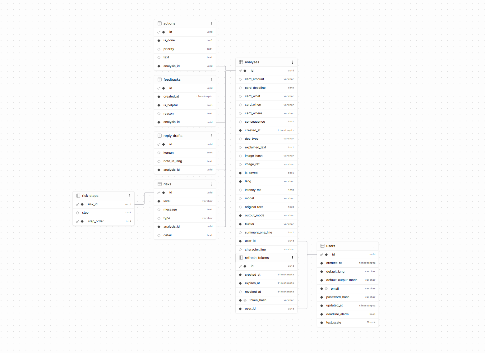

AI 배리어프리 문서 해석 · 해커톤 선도상 3등 · 백엔드 1인 담당
읽고 (Ilgo)
고지서·안내문 같은 생활 문서 사진을 쉬운 한국어·영어 설명으로 바꿔 주는 서비스입니다. 6인 팀에서 백엔드 API 서버를 혼자 맡았습니다.
웹(Flutter)과 API 서버(Spring)를 Railway에 직접 배포했습니다. AI 분석은 데모용 샘플 응답으로 동작합니다.
읽고 앱 소개 영상 (1분 11초) · Claude를 사용하여 영상을 제작하였습니다
프로젝트 소개
고지서나 행정 안내문은 정작 가장 도움이 필요한 사람에게 가장 읽기 어렵게 쓰여 있습니다. 사진 한 장으로 문서를 쉬운 말로 바꿔 주고, 위험한 부분과 해야 할 일까지 뽑아 줍니다.
해커톤 4일 동안 서버와 앱을 동시에 만들어야 했던 제약이 아래 두 결정의 배경입니다.
내 역할
앱 화면은 다른 팀원이 만들고, 저는 백엔드 API 서버 전체를 혼자 맡았습니다.
- 로그인·권한 쿠키를 다루지 않는 Flutter 앱에 맞춰 JWT 인증을 적용했습니다.
- 문서 분석 형태가 매번 달라지는 AI 응답을 요약·위험도·핵심 카드·할 일의 고정 스키마로 파싱하고, 실패 응답 규격을 정했습니다.
- 공통 처리 예외 처리와 요청 제한을 공통 계층으로 묶었습니다. 사용자당 분당 20회 레이트 리밋으로 외부 AI 호출 남용을 막습니다.
- 테스트 인증·분석·문서 생성 기능에 JUnit 테스트 40개를 작성해 회귀 검증 기반을 만들었습니다.
전체 구조
왼쪽에서 오른쪽으로 요청이 흘러갑니다. 색이 들어간 칸이 제가 맡은 부분입니다.
실제 코드의 패키지 구조입니다. 서버 전체를 맡았습니다.
쿠키를 쓰지 않는 앱에서 로그인이 유지되지 않는 문제
해커톤 4일 안에 Flutter 앱과 서버를 동시에 만들어야 했고, 백엔드는 저 혼자였습니다. 앱은 브라우저처럼 쿠키를 자동으로 관리하지 않아 세션 방식은 앱 쪽 작업이 늘어났습니다.
로그인 시 JWT를 발급하고, OncePerRequestFilter에서 서명과 만료를 검증해 SecurityContext에 인증 주체를 세웠습니다. 서버는 세션을 만들지 않도록(STATELESS) 설정했고, 이후 계층은 인증을 다시 확인하지 않습니다.
추가 인프라 없이 인증을 완성했고, 새로 만드는 API에도 같은 로그인 검사가 자동으로 적용돼 앱 개발과 병행할 수 있었습니다.
Trade-off
앱 쪽 작업과 인프라를 늘리지 않는 것이 기준이었고, 토큰 탈취 대응은 4일 일정 안에서는 뒤로 미뤘습니다.
- 1X서버 세션 HttpSession
앱이 쿠키를 직접 저장하고 매 요청에 실어 보내야 해 앱 작업이 늘어납니다.
- 2XRedis 세션 저장소
서버를 늘려도 로그인이 유지되지만, 4일 안에 Redis를 추가로 운영해야 합니다.
- 3OJWT
서버가 상태를 갖지 않아 추가 인프라가 필요 없고, 앱은 헤더에 토큰만 실어 보내면 됩니다.
남은 한계
- 리프레시 토큰 없이 7일짜리 토큰 하나만 쓰기 때문에, 토큰이 탈취되면 최대 7일 동안 막을 수 없고 강제 로그아웃도 할 수 없습니다.
AI 답변 형식이 매번 달라 화면을 못 만드는 문제
AI가 매번 다른 형태의 줄글로 답을 줘서 앱이 화면 틀을 정할 수 없었습니다. 서버와 앱을 동시에 만드는 상황에서는 이게 곧 일정 위험이었습니다.
AI 응답을 요약 · 위험도 · 핵심 카드 · 할 일 필드를 가진 DTO로 파싱해 내려보내고, 파싱에 실패하면 1회 재시도하고, 그래도 실패하면 공통 예외 처리(@RestControllerAdvice)가 422로 응답합니다.
앱이 응답 규격 하나만 보고 개발할 수 있게 됐고, 규격이 깨지는 경우는 JUnit 테스트 40개에서 먼저 드러납니다.
Trade-off
앱이 서버를 기다리지 않고 화면을 만들 수 있는 고정 규격이 필요했고, 형식이 깨졌을 때의 처리는 한 곳에만 두려 했습니다.
- 1XAI 원문 그대로 전달
앱이 매번 파싱해야 하고, 형식이 바뀌면 화면이 깨집니다.
- 2O서버가 고정 스키마 DTO로 변환
앱은 응답 규격 하나만 보면 되고, 형식이 깨지는 경우는 서버에서만 처리합니다.
남은 한계
- 사용자당 분당 20회 호출 제한은 외부 AI 비용을 막기 위한 운영 정책값이며, 성능을 측정해 나온 숫자가 아닙니다.
- 형식만 맞으면 빈 값도 통과해, 필수 필드 검증은 남아 있습니다.
데이터 구조 (ERD)
어떤 정보를 어떤 표에 나눠 담고, 표끼리 어떻게 연결되는지 그린 설계도입니다.

사용자 · 문서 분석 결과 중심 테이블 관계